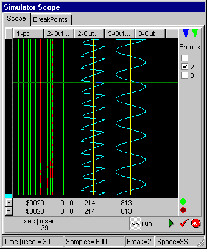

JALss is simple logic simulator (for M$-Windows), special designed to simulate PICs and other MCUs. Although it's basically designed for logical signals, it also has limited support for analog signals. JALss has special features from PIC programs written in JAL and is capable of communicating with JALcc (a JAL IDE)
JALss is freeware.
JALss has entry points to hook your own devices in the form of a DLL. A user device-DLL can be written in any language that supports the writing of windows-DLLs.
The simulation is done with a 2-phase system clock. The frequency of this system clock is derived from the device with the highest frequency.
- In the first phase all the devices read their input signals.
- In the second phase all the devices generate their output signals
Calculation of the output signals can be done either in the first or the second phase, depending on where the calculation is done. So either the input signals or the output signals should be stored temporary depending on where the calculations are done.
